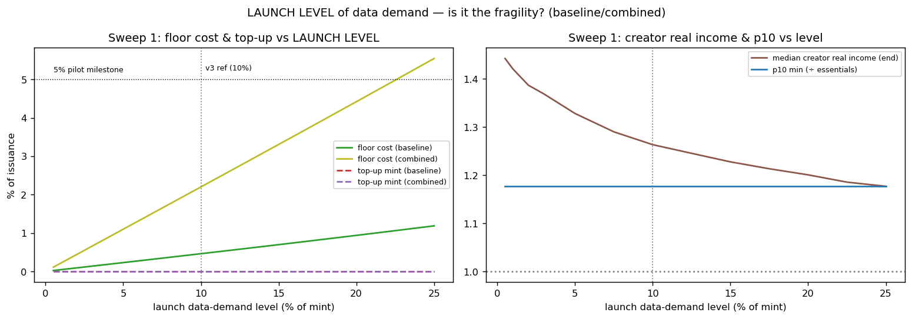
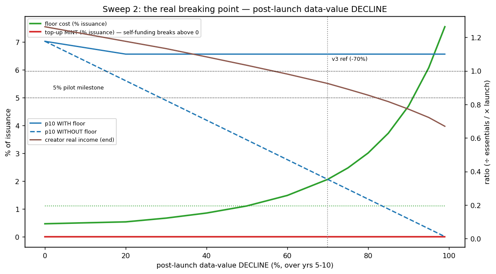

In plain language
Companion to RESULTS - Data Demand Sweep. Companion added July 11, 2026 — the v1–v5-era runs predate the plain-language convention; written from the committed RESULTS as it stands today (including any verification-pass corrections already applied in that file), with no reinterpretation.
The question
v3's biggest "assumed, not proven" item was the level of institutional data demand — calibrated at ~10% of mint value and admitted to be unknowable before launch. This run sweeps it hard in two directions: what if it launches anywhere from 1% to 25% of mint? And what if data value collapses after launch — by half, by 70%, by 99%?
What we found
Data demand cannot break the floor's self-funding. Top-up minting stayed at 0.0% of issuance at every launch level and through every collapse, even a 99% one — because the floor is funded by the 10% routing slice on the human-attention mint, which is large and stable regardless of how big or small the data economy is. And the floor earns its keep cheaply: with it off, a mere 20% data decline already pushes the bottom decile underwater, and at the −70% reference they'd sit at 0.35× essentials for ~9 years; with it on, they hold at 1.10× for a floor cost of 2.1% of issuance (7.6% even at −99%). What would break self-funding is the pool share itself: top-up minting begins only once the verification pool share falls below ~6% under the worst case, so the spec'd 10% carries roughly a 1.5× safety margin — and governance shouldn't cut it below ~7–8% without re-running this.
The honest catch
The reassurance comes with a reframing. "Self-funded by routing" precisely means funded by the slice of issuance dominated by human-attention minting — so the floor is robust to data demand but coupled to the size and stability of the attention mint instead; a deep adoption failure, not data demand, is what would stress it, and that belongs on the open-questions list. And the cost of a data collapse doesn't vanish — it lands on creators, whose real income falls to 0.92× at −70% and 0.67× at −99% while the poor stay held at 1.10×. That burden finding deserves a design response. Usual limits: quantity-theory pricing, no behavioral feedback, no fraud, fixed population, N=25,000, with all numbers governance-tunable defaults meant to be argued with.
One line
The scariest unknown in v3 — how big the data economy really is — turns out not to matter for the safety net: the floor stays fully self-funded from 1% to 25% launch demand and through a 99% collapse, its true anchors being the attention mint and a pool share that must stay above ~6%; the real cost of a data collapse falls on creators, and that is the finding to act on.
Words used here (added July 18, 2026 — plain-language house rule; the text above is unchanged). Mint / human-attention mint — new EVE is created only by verified live human engagement; that attention stream is the money tap the floor's funding rides on. Routing slice — the fixed 10% of every newly minted EVE automatically diverted to the pool that pays the floor. Top-up minting — printing extra money when that pool falls short; 0.0% means the printer never switched on. Issuance — the flow of newly created money; costs are quoted as shares of it. Bottom decile — the poorest 10% of people; "held at 1.10×" means they stay 10% above the essentials line. Real income — what earnings actually buy after price changes, not the raw number. Quantity-theory pricing — the simple rule that more money chasing the same goods means higher prices. N=25,000 — the runs simulate 25,000 people.
(Dated note, July 18, 2026: "the floor's self-funding" here is the v3-era in-model result, kept unedited above and since retired as a general claim — later, harder tests (v6.x, v13.1) found every real activation needs a real funder; what survives is that data-demand collapse still cannot break a funded floor, and the cost lands on creators, not the poor — that part stands. Also: the data-price side of this question got its own cell in July 2026 — see EVE Sim v37 and "the minimum ask.")
Figures


Technical results
Closes the single biggest "assumed, not proven" item in RESULTS - EVE Sim v3.md: the level of institutional data demand, calibrated at ~10% of mint value and admitted to be unknowable pre-launch. This run reuses the v3 engine verbatim (it reproduces results_v3.json at the reference point) and sweeps data demand two ways to find where the self-funding floor breaks. Files in this folder.
The one-line answer
Data demand does not break the floor's self-funding — at any plausible level or under any plausible collapse. Top-up minting stays at 0.0% of issuance across launch levels from 1% to 25% of mint, and across post-launch data-value declines all the way to 99%. The thing that funds the floor is the 10% routing slice on the human-attention mint, which is large and stable regardless of how big or small the data economy is. So the "unknowable 10%" was a smaller risk than it looked.
What the sweep did surface is more useful: the real cost of a data collapse lands on creators, not the poor; and the actual lever that would break self-funding is the pool share, not data demand.
Sweep 1 — does the launch level of data demand matter? (No.)
Varying data demand from 1% to 25% of mint, the 10th-percentile outcome is invariant and top-up minting is always zero:
| Launch data level | p10 (÷ essentials) | Floor cost, baseline | Floor cost, combined | Top-up mint | Median creator real income |
|---|---|---|---|---|---|
| 1% | 1.18 | 0.05% | 0.22% | 0.0% | 1.42 (baseline) |
| 5% | 1.18 | 0.23% | 1.10% | 0.0% | 1.33 |
| 10% (v3 ref) | 1.18 | 0.46% | 2.20% | 0.0% | 1.26 |
| 15% | 1.18 | 0.70% | 3.31% | 0.0% | 1.23 |
| 25% | 1.18 | 1.19% | 5.54% | 0.0% | 1.18 |
Why the level is neutralized: launch price is pegged to the bottom decile's launch income, so both the floor (F = 1.10 × price) and market data income scale together with the data level. The real structure — who clears the floor, how much the pool covers — barely moves. The only monotone effect is on creator real income, which is higher when data demand is lower (a lower data level pegs a lower price, so the fixed-EVE creator mint buys more). Floor cost rises gently with the level and only crosses the 5%-of-issuance pilot milestone at a 25% data level under combined stress.
Sweep 2 — the real axis: a post-launch decline in data value
This is the dangerous direction (price was pegged at launch to higher data income; if data value then falls, market income drops beneath the now-fixed floor). Holding launch demand at 10% and deepening the year-5–10 decline:
| Data-value decline | p10 with floor | p10 without floor | Floor cost | Top-up mint | Creator real income |
|---|---|---|---|---|---|
| 0% | 1.18 | 1.18 | 0.5% | 0.0% | 1.26 |
| −50% | 1.10 | 0.59 (underwater 8.5 yr) | 1.1% | 0.0% | 1.03 |
| −70% (v3 ref) | 1.10 | 0.35 | 2.1% | 0.0% | 0.92 |
| −90% | 1.10 | 0.12 | 4.7% | 0.0% | 0.77 |
| −95% | 1.10 | 0.06 | 6.1% | 0.0% | 0.72 |
| −99% | 1.10 | 0.01 | 7.6% | 0.0% | 0.67 |
Three things to read off this (and fig_sweep2_depth.png):
- Self-funding never breaks. Even at a 99% data collapse, the floor is paid entirely from the verification pool — zero new minting, inflation flat at ~0%. The floor cost crosses the 5%-of-issuance pilot milestone only at a ~95% decline.
- The floor is doing real work — it's just cheap. With the floor off, a mere 20% decline already pushes the p10 underwater; at −70% the bottom decile sits at 0.35× essentials for ~9 years. The floor converts that collapse into a flat 1.10× line at a couple percent of issuance.
- The cost lands on creators, not the poor. As data value falls, the poor are held at 1.10× by the floor; creator real income absorbs the hit (0.92 at −70%, down to 0.67 at −99%), because a shrinking data economy and a growing floor draw leave a smaller validator-pool remainder for creators. This extends v3's noted "soft spot" — under commoditization, the burden is structurally shifted onto creators.
Sweep 3 — so what would break self-funding? The pool share.
Since data demand can't break it, the binding lever is the verification pool share itself. Under the worst case (95% decline + combined stress, floor cost ~6.5% of issuance), shrinking the pool share:
| Verification pool share | Top-up mint required | Self-funded? |
|---|---|---|
| 10% (spec) | 0.0% | yes |
| 8% | 0.0% | yes |
| 6% | 0.3% | breaks here |
| 4% | 2.3% | no |
| 2% | 4.3% | no |
Top-up minting begins only once the pool share falls below ~6% — i.e., the spec'd 10% slice carries roughly a 1.5× safety margin even against a near-total data collapse layered on combined stress. (Below the break point, the floor is still delivered — it just gets there by minting, which the governor then has to lean against; inflation ticks up to ~0.04%.)
What this updates in the v3 story
- Downgrade one risk. The "level of data demand is unknowable" caveat in the v3 results is, on this model, not a fragility. The floor's fundability is anchored to the human-attention mint, not to the data economy's size. Worth saying plainly in the white paper rather than leaving it as an open worry.
- Reframe the floor's funding honestly. "Self-funded by routing" precisely means funded by the 10% slice of all issuance, which is dominated by human-attention minting. The data economy barely contributes to the pool — so the floor is robust to data demand but coupled to the size and stability of the attention mint instead. If attention minting itself ever shrinks (deep adoption failure), that — not data demand — is what would stress the floor. That belongs on the open-questions list.
- Name the true breaking lever. Self-funding breaks if the verification pool share drops below ~6% under worst-case demand. 10% is a defensible default with margin; don't let governance cut it below ~7–8% without re-running this.
- The creator-burden finding deserves a design response. Deep commoditization is paid for by creators, not the poor. If that's not the intended distribution of pain, a mechanism that shares the floor's stress more broadly (e.g., a small slice of the floor draw from the dependency/maintainer pools, or a temporary governor easing) is worth modeling.
Caveats
Same structural limits as v1–v3 (quantity-theory pricing, no behavioral feedback, no fraud, fixed population, single 15-year horizon). Run at N=25,000 (vs v3's 100,000) for sweep speed — percentile estimates are stable, and the reference points reproduce v3 (data=10% combined → 2.2% floor cost; −70% decline → 2.06% ≈ v3's 2.1%). The "post-launch decline" is modeled as the same year-5–10 ramp v3 used, just deepened. All numbers are governance-tunable defaults meant to be argued with.
Files
data_demand_sweep.py— the three sweeps on the ported v3 enginefig_sweep1_level.png— launch level: floor cost / top-up / creator income / p10fig_sweep2_depth.png— the real breaking point: post-launch data-value declineresults_data_demand_sweep.json— all rows + located thresholds
Raw data